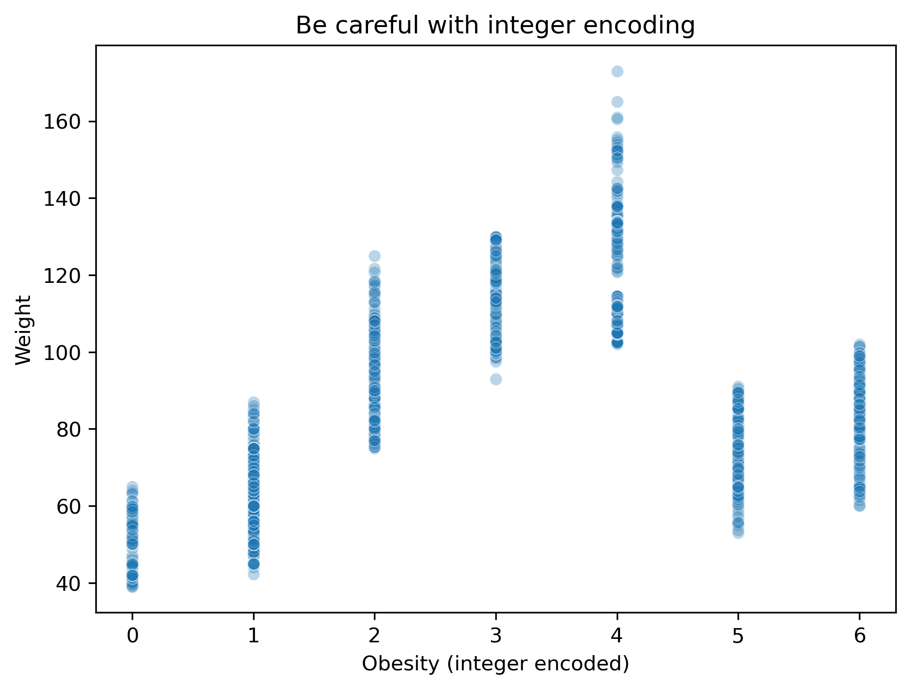
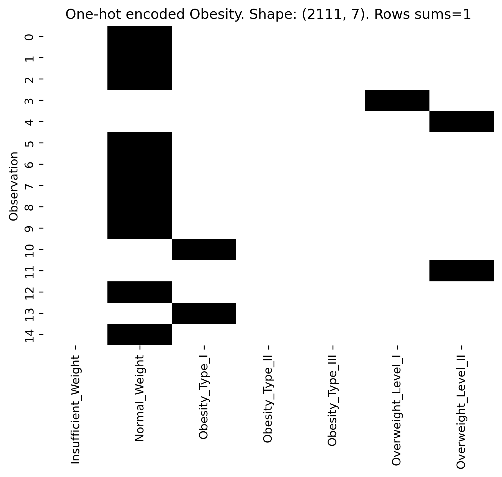
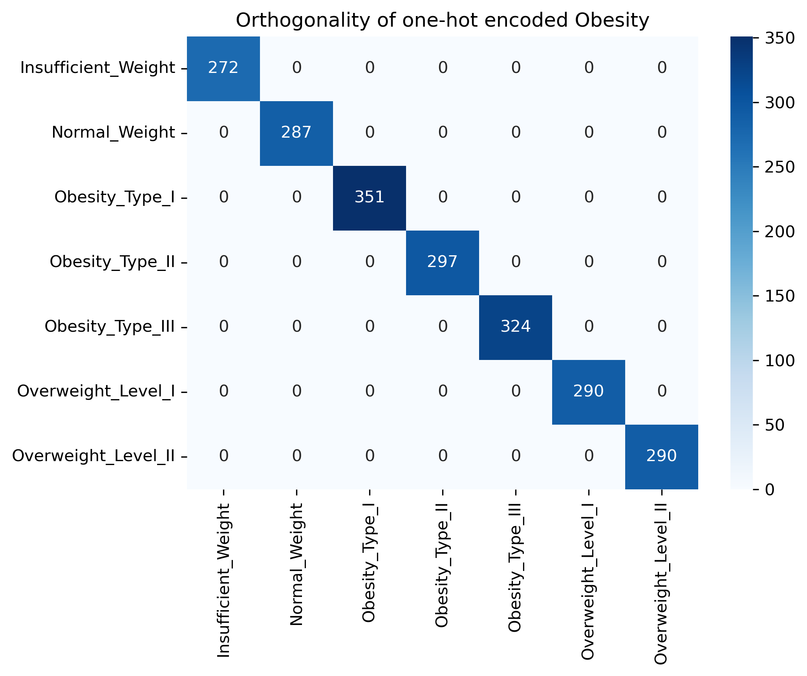
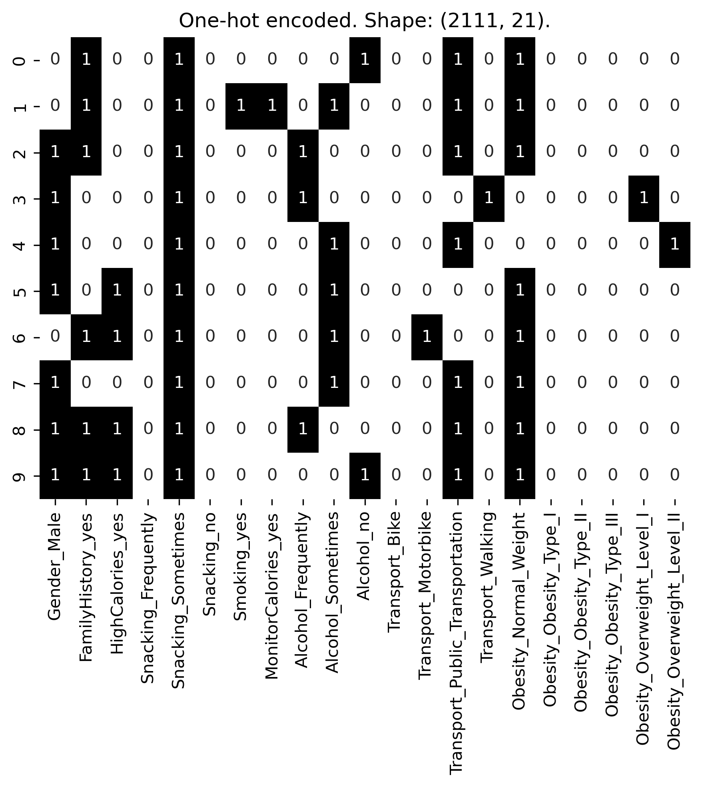
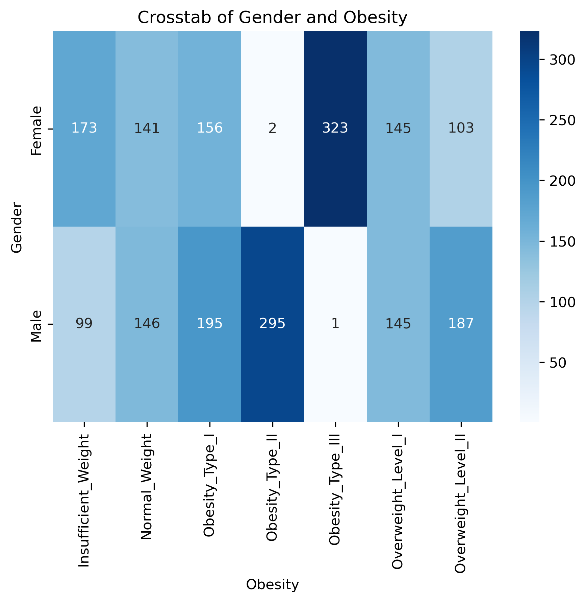
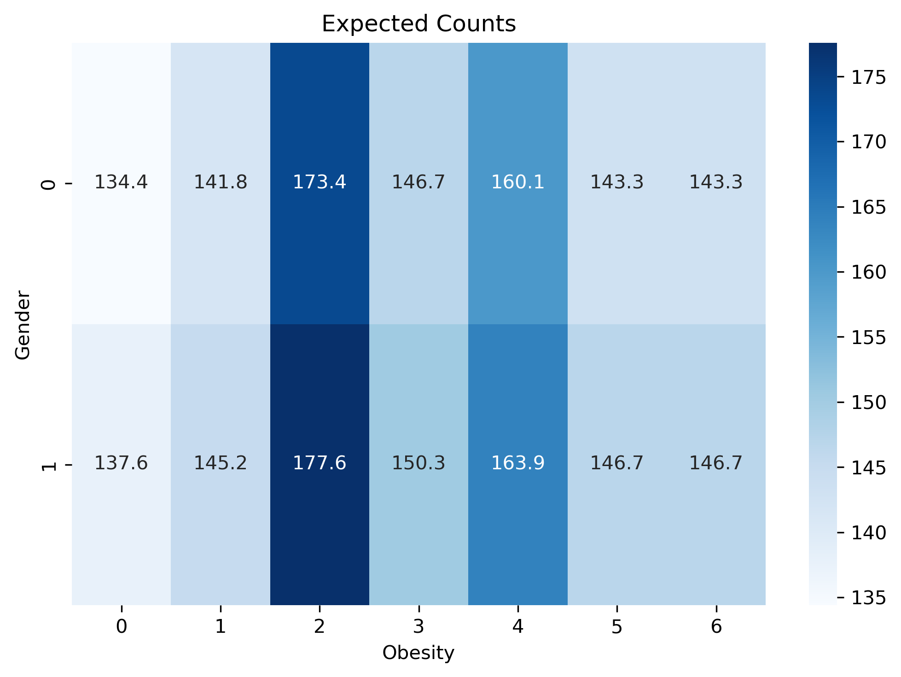
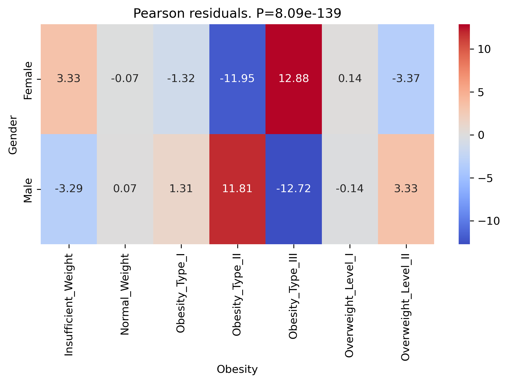

Encoding Categorical Data
Software First
Obesity Data (Reminder)
Encoding Variable Names
Ideally we would want to have some coding standards for variable names (i.e. ICD-10, Snomed CT, …). Below I simply want to avoid long variable names and incomprehensible abbreviations.
Code
var_dict = {
"family_history_with_overweight": "FamilyHistory",
# Frequent consumption of high caloric food (yes/no)
"FAVC": "HighCalories",
"FCVC": "Vegetables",
"NCP": "NumberMeals",
"CAEC": "Snacking",
"SMOKE": "Smoking",
"CH2O": "Water",
"SCC": "MonitorCalories",
"FAF": "PhysActivity",
"TUE": "TechUse",
"CALC": "Alcohol",
"MTRANS": "Transport",
"NObeyesdad": "Obesity"
}
df.rename(columns=var_dict, inplace=True)Encoding Variable Levels
Levels
Code
Category Levels:
Gender 2
FamilyHistory 2
HighCalories 2
Snacking 4
Smoking 2
MonitorCalories 2
Alcohol 4
Transport 5
Obesity 7
dtype: int64How should we transform categorical variables?
Boolean Encoding
Code
X:
Gender HighCalories Smoking
0 False False False
1 False False True
2 True False False
3 True False False
4 True False FalseBoolean is very suitable to encode binary variables, and define subsets (e.g for UpSet plots)
The implicit equivalence (False=0, True=1) also helps to perform basic calculations such as cooccurence and correlation analysis
\[ X \to Z = \frac{X - \mu}{\sigma} \]
\[ C = X^T \cdot X ~~~~~~~~~~~ R = Z^T \cdot Z \]
Code
Co-occurence matrix:
Gender HighCalories Smoking
Gender 1068 966 29
HighCalories 966 1866 34
Smoking 29 34 44
X -> Z:
Gender HighCalories Smoking
0 -1.011674 -2.759116 -0.145866
1 -1.011674 -2.759116 6.852373
2 0.987992 -2.759116 -0.145866
3 0.987992 -2.759116 -0.145866
4 0.987992 -2.759116 -0.145866
Correlation Matrix:
Gender HighCalories Smoking
Gender 1.000000 0.064934 0.044698
HighCalories 0.064934 1.000000 -0.050660
Smoking 0.044698 -0.050660 1.000000Integer Encoding
It might be tempting (and easy) to apply integer encoding to categorical variables with more levels
Code
X = pd.DataFrame({
"Gender": df["Gender"].astype("category").cat.codes,
"Obesity": df["Obesity"].astype("category").cat.codes,
"Weight": df["Weight"]
})
print(f'X: \n {X.head()}')
sns.scatterplot(
data=X,
x="Obesity",
y="Weight",
alpha=0.3
)
plt.title('Be careful with integer encoding')
plt.xlabel("Obesity (integer encoded)")
plt.show()X:
Gender Obesity Weight
0 0 1 64.0
1 0 1 56.0
2 1 1 77.0
3 1 5 87.0
4 1 6 89.8
- Integer encoding can be misleading for categorical variables
- sorting, distances and means are not usually meaningful
- need higher dimensional space
One-hot Encoding
The key idea is to replace each category level by a different vector, in a \(K\)-dimensional space (for \(K\) categories). For convenience these vectors are normalized and orthogonal.
Code
VAR="Obesity"
print(f'Number of {VAR} levels: {df[VAR].nunique()}')
VAR_onehot = pd.get_dummies(df[VAR], drop_first=False)
sns.heatmap(VAR_onehot[:15], cmap="Greys", cbar=False, annot=False)
plt.title(f'One-hot encoded {VAR}. Shape: {VAR_onehot.shape}. Rows sums=1')
plt.ylabel('Observation')
plt.show() Number of Obesity levels: 7
Code

Each row \(i\) sums to 1 (over \(k\) levels): \[ \sum_{j=1}^{k} x_{ij} = 1 \]
Columns \(j\) and \(l\) are orthogonal to each other \[ \sum_{i=1}^{n} x_{ij} x_{il} = n_j \delta_{jl} \]
- replace “Obesity” with “Transport” and interpret
- apply one-hot encoding with
drop_first = True
sklearn also provides a convenient OneHotEncoder which can be used in a pipeline over multiple categorical variables
Code
from sklearn.preprocessing import OneHotEncoder
encoder = OneHotEncoder(sparse_output=False, drop="first")
X_encoded = encoder.fit_transform(df[cat_cols])
# back to pandas dataframe for visualization
X_encoded_df = pd.DataFrame(
X_encoded,
columns=encoder.get_feature_names_out(cat_cols),
index=df.index
)
sns.heatmap(X_encoded_df.iloc[:10], cmap="Greys", cbar=False, annot=True)
plt.title(f'One-hot encoded. Shape: {X_encoded_df.shape}.')
plt.show() 
Relation between categorical variables
Crosstabulation
The one-hot encoding representation is also convenient to formalize cross-tabulation as matrix multiplication: \[ C = A^T B = \text{crosstab}(A, B) \longrightarrow \]
\[ C_{kj} = \sum_{i=1}^{n} A_{ik} B_{ij} = \]
Code
VAR1 = "Gender"
VAR2 = "Obesity"
#A = pd.get_dummies(df[VAR1]).astype(int)
#B = pd.get_dummies(df[VAR2]).astype(int)
#CT = A.T @ B
# contingency table = crosstab
CT = pd.crosstab(df[VAR1], df[VAR2])
sns.heatmap(
CT,
annot=True,
cmap="Blues",
fmt="d"
)
plt.title(f"Crosstab of {VAR1} and {VAR2}")
plt.show()
Metrics
How should we quantify and assess a given observed overlap \(O_{ij}\)?
Given a contingency table of observed counts \(O_{ij}\) and the total count over all cells \(N\), we can calculate the expected counts for a given overlap from the marginal distributions
Expected Counts: \[ E_{ij}=N*Pr(row=i)*Pr(col=j) \]
\(\chi^2\) Metrics:
\[ \chi^2 = \sum_i \sum_j \frac{(O_{ij} - E_{ij})^2}{E_{ij}} \]
This can be translated into \(P\)-values
Code
from scipy.stats import chi2_contingency
# chi-squared test of independence
chi2, p_value, dof, expected = chi2_contingency(CT)
sns.heatmap(expected, annot=True, fmt=".1f",cmap="Blues")
plt.title(f"Expected Counts")
plt.xlabel(VAR2)
plt.ylabel(VAR1)
plt.tight_layout()
plt.show()
pearson_residuals = (CT - expected) / np.sqrt(expected)
sns.heatmap(
pearson_residuals,
annot=True,
fmt=".2f",
cmap="coolwarm",
center=0
)
plt.title(f"Pearson residuals. P={p_value:.2e}")
plt.xlabel(VAR2)
plt.ylabel(VAR1)
plt.tight_layout()
plt.show()

Summary
- factorial variables are also encoded
- many different choices are possible (also extensions of One-Hot encoding)
- Independence and association tests for categorical variables
- Beware of tiny \(P\)-values \(\to\) statistical interpreation: reject Null-Model